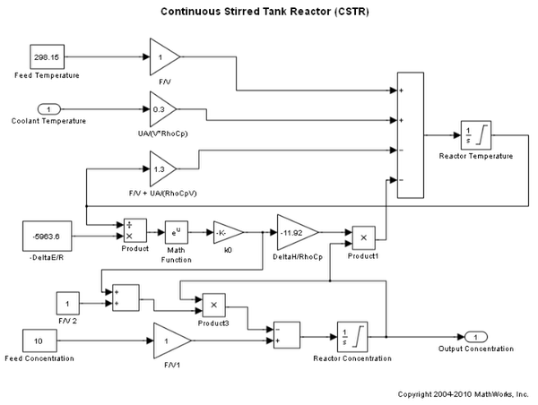
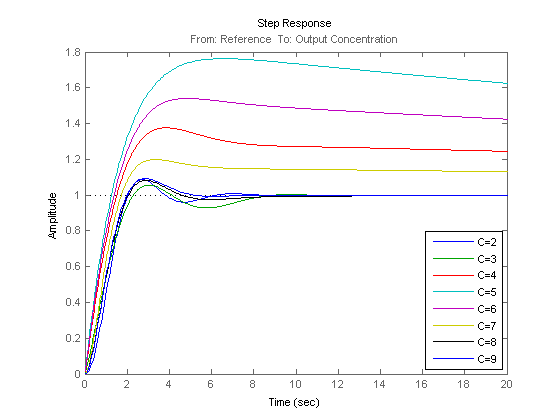
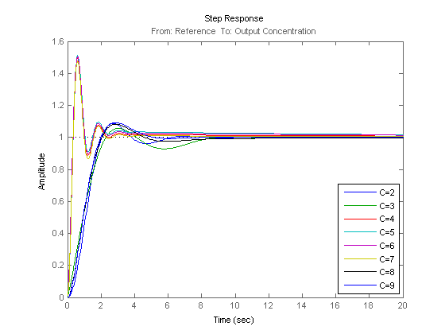

複数操作点用の PID コントローラー ファミリーの設計
このデモでは、幅広い操作点上で動作する非線形プラント用の PID コントローラーの配列を Simulink で設計する方法を説明します。
目次
プラント モデルを開く
プラントは、幅広い操作点上で動作する連続攪拌タンク反応器 (CSTR) です。単一の PID コントローラーの場合、冷却水温度を効果的に使用して、その PID コントローラーの設計にある小規模な操作範囲付近の出力濃度を調整できます。ただし、プラントが強度な非線形システムであるため、操作点が大きく変化する場合、制御性能が低下します。閉ループ システムでは、不安定になる可能性もあります。
mdl = 'scdcstrctrlplant';
open_system(mdl)
 詳細は、Seborg, D.E. et al., "Process Dynamics and Control", 2nd Ed., 2004, Wiley, pp.34-36 を参照してください。
ゲイン スケジュールの紹介
非線形制御問題を解決するための一般的な方法として、線形コントローラーでゲイン スケジュールを使用する方法が挙げられます。ゲイン スケジュール コントロール システムの設計には、一般的に以下の 4 つの手順があります。
(1) 各動作領域に対してプラント モデルを取得する。通常は、 いくつかの平衡操作点でプラントを線形化します。
(2) 直前の手順で取得されたプラント モデル用に、 PID などの線形コントローラーのファミリーを設計する。
(3) PID ゲインなどのコントローラー係数がスケジュール変数の 値に基づいて変化するようなスケジュール メカニズムを 実装する。プラント動作への外乱を最小化するために、コントローラー間の伝達は、 平滑な (バンプレスな) 伝達であることが要求されます。
(4) 制御性能をシミュレーションを使用して評価する。
ゲイン スケジュールでのバックグラウンドの読み込みについての詳細は、W. J. Rugh と J. S. Shamma の調査論文"Research on gain scheduling", Automatica, Issue 36, 2000, pp.1401-1425 を参照してください。
この例では、手順 1 および 2 にある CSTR プラントの PID コントローラー ファミリーの設計について説明します。
複数操作点用の線形プラント モデルの取得
出力濃度 C は、異なる動作領域を識別するために使用されます。CSTR プラントは、低変換率 (C=9) と高変換率 (C=2) の間の任意の変換率で操作できます。このデモでは、全操作範囲を C = 2、3、4、5、6、7、8 および 9 と表現される 8 つの領域に分割します。
以下のループでは、まず、findop コマンドを使用して平衡操作点を計算します。その後、linearize コマンドを使用して各操作点でプラントを線形化します。
% Obtain default operating point op = operspec(mdl); % Set the value of output concentration C to be known op.Outputs.Known = true; % Specify operating regions C = [2 3 4 5 6 7 8 9]; % Initialize an array of state space systems Plants = rss(1,1,1,8); for ct = 1:length(C) % Compute equilibrium operating point corresponding to the value of C op.Outputs.y = C(ct); opoint = findop(mdl,op,linoptions('DisplayReport','off')); % Linearize plant at this operating point Plants(:,:,ct) = linearize(mdl, opoint); end
CSTR プラントが非線形であるため、複数の線形モデルで異なる特性が期待されます。たとえば、高変換率と低変換率を使用するプラント モデルは安定していますが、それ以外は安定しません。
isstable(Plants)'
ans =
1 1 0 0 0 0 1 1
プラント モデル用の PID コントローラーの設計
複数の PID コントローラーをバッチで設計するには、pidtune コマンドを使用します。次のコマンドでは、並列形式で PID コントローラーの配列が生成されます。必要な開ループ クロスオーバー周波数は 1 ラジアン/秒、および位相余裕は既定値の 60°です。
% Design controllers Controllers = pidtune(Plants,'pidf',pidtuneOptions('Crossover',1)); % Display controller for C=4 Controllers(:,:,4)
Continuous-time PIDF controller in parallel form:
1 s
Kp + Ki * --- + Kd * --------
s Tf*s+1
with Kp = -12.4511, Ki = -0.10841, Kd = -14.3804, Tf = 0.0087502
ステップ設定値追従用の閉ループ応答を以下のようにプロットします。
% Construct closed-loop systems clsys = feedback(Plants*Controllers,1); % Plot closed-loop responses figure; hold on for ct = 1:length(C) % Select a system from the LTI array sys = clsys(:,:,ct); set(sys,'Name',['C=',num2str(C(ct))],'InputName','Reference'); % Plot step response stepplot(sys,20); end legend('show','location','southeast')
すべての閉ループは安定していますが、不安定なプラント (C=4、5、6、および 7) のあるループの整定時間が長すぎます。開ループ帯域幅を 5 ラジアン/秒に増加し、位相余裕を 30°に減少すると改善する場合があります。これらのループのオーバーシュートは、不安定なプラントが PID コントローラーの性能を制限するため大きなまま維持されます。
% Design controllers for unstable plant models Controllers(:,:,3:6) = pidtune(Plants(:,:,3:6),'pidf',pidtuneOptions('CrossoverFrequency',5,'PhaseMargin',30)); % Display controller for C=4 Controllers(:,:,4)
Continuous-time PIDF controller in parallel form:
1 s
Kp + Ki * --- + Kd * --------
s Tf*s+1
with Kp = -146.9905, Ki = -6.346, Kd = -60.9858, Tf = 0.19999
これで、すべての閉ループ応答が満足のいく応答となります。
% Construct closed-loop systems clsys = feedback(Plants*Controllers,1); % Plot closed-loop responses figure; hold on for ct = 1:length(C) % Select a system from the LTI array sys = clsys(:,:,ct); set(sys,'Name',['C=',num2str(C(ct))],'InputName','Reference'); % Plot step response stepplot(sys,20); end legend('show','location','southeast')
PID コントローラーの配列を設計しました。各 PID コントローラーは、ローカル操作点周辺で適切な性能を出さなければなりません。次の手順は、このデモでは取り扱わないスケジュール メカニズムの実装です。
モデルを閉じます。
bdclose(mdl);